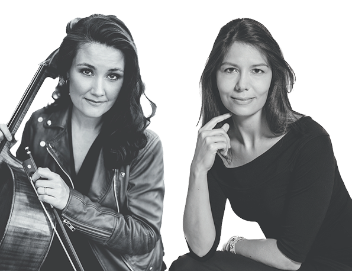

Concert 12 oktober 2025
Muziek van o.a Bach, Grieg, Granados, Saint- Saëns & Elgar
Een muzikale reis door de geschiedenis.
Korte beroemde werken geschikt voor alle leeftijden.
Tove Törngren, cello & Eline Bergmann, piano
Zondag 12 oktober
Inloop 10:15u.
Aanvang: 10:30u.
Gebouw Zang & Vriendschap
Jansstraat 74 zw
Haarlem
Toegang:
Volwassenen: €20,-
Onder 18: €12,50
Gebouw Zang & Vriendschap
Jansstraat 74 zw, Haarlem
Google Maps
Openbaar vervoer
De zaal is op 10 minuten lopen van Station Haarlem.
Parkeren
- ParkBee Janstraat
- Parkeergarage De Appelaar
- Parkeergarage Raaks